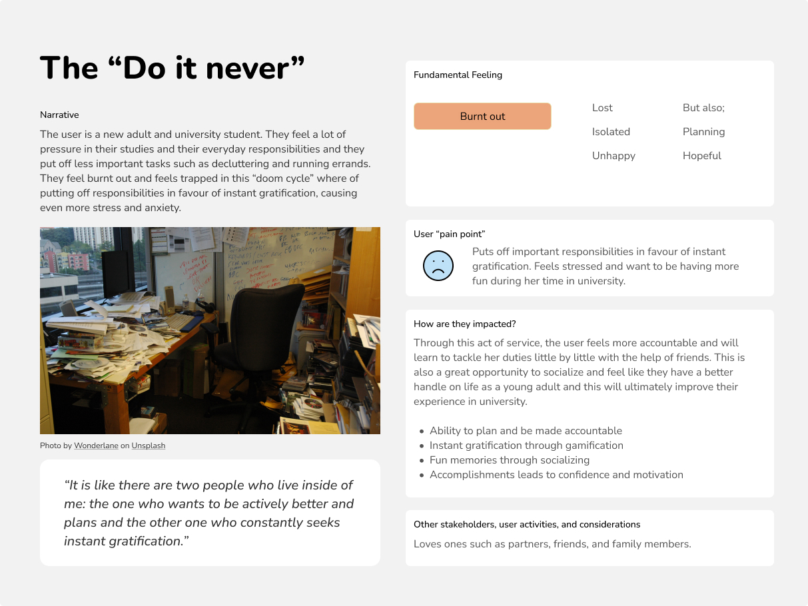
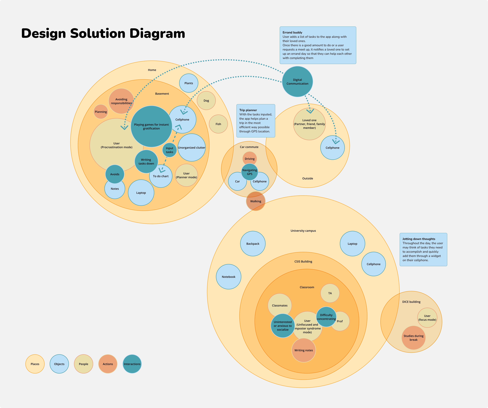
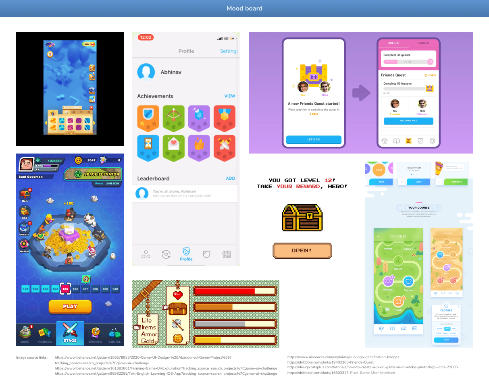
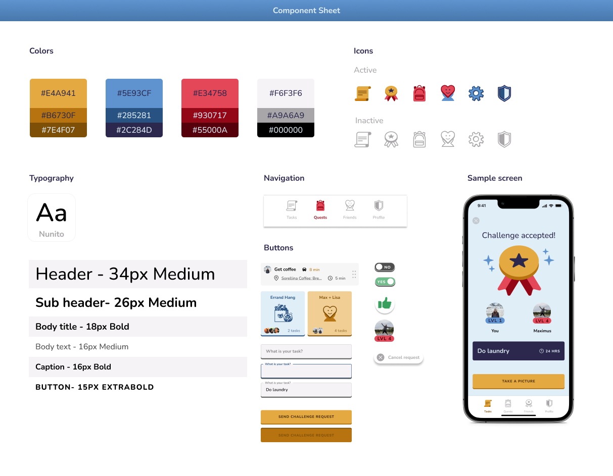
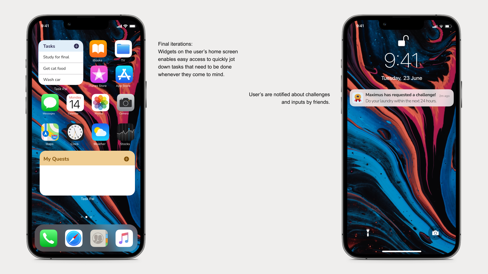
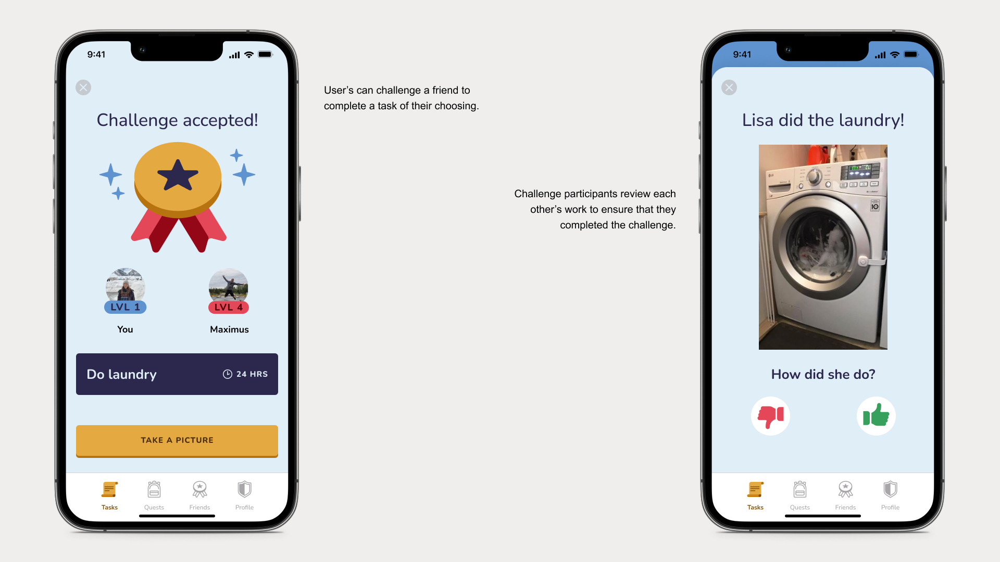
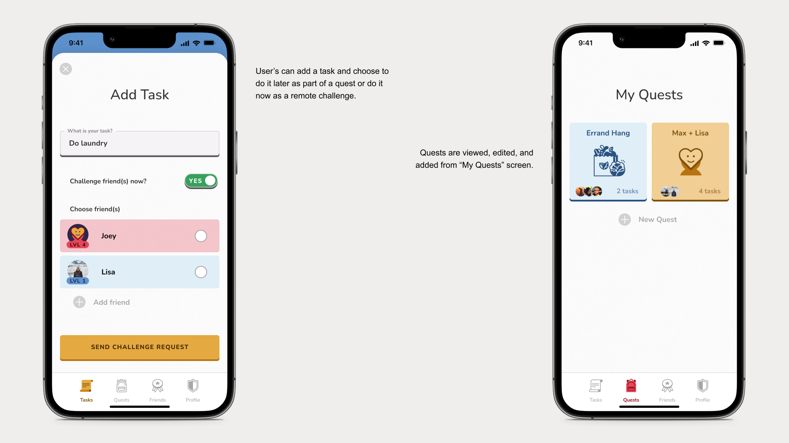
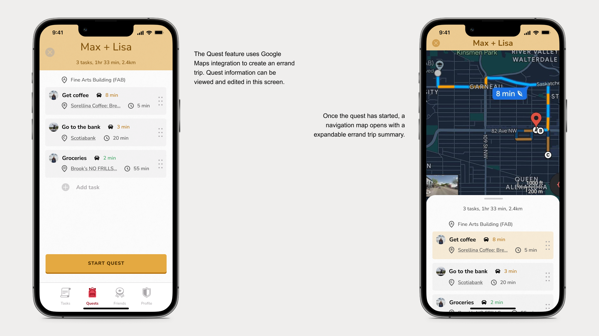
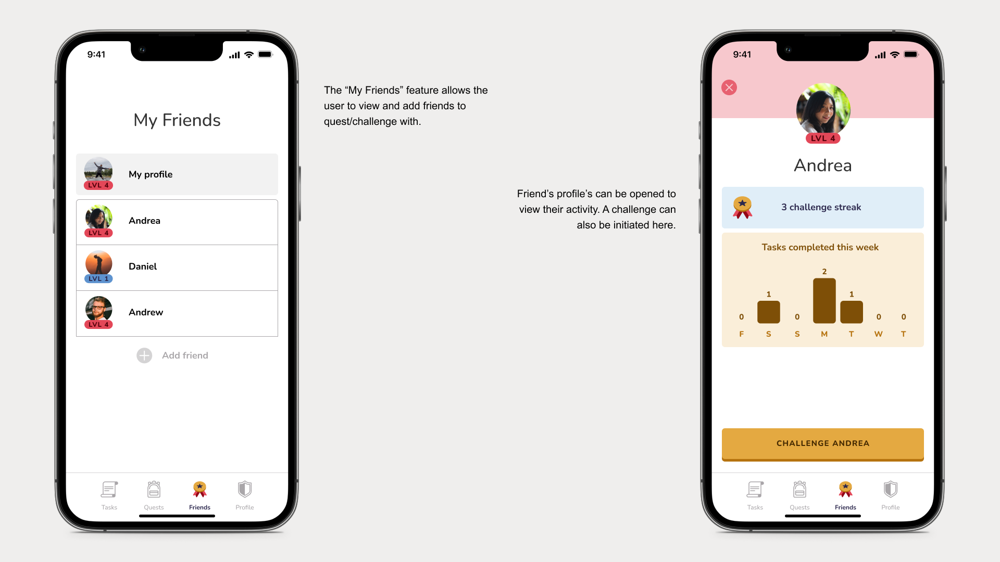

Introduction
Brief: The "Task Pal" UX project is designed to help students overcome the "doom cycle" of procrastination and overwhelm by turning tasks into a game-like experience with social connections and productivity tools with a magical moment occurring when companions bump their phones together after each completed task to celebrate their accomplishments.
Note: This project is a university project. It does not exist in the real world.
View the complete UX flow (with sound)Persona
The “only the most urgent task matters” mentality is common among students. It helps them prioritize what they need to get done, but it can also result in other responsibilities being neglected, causing even more stress and anxiety. The overwhelming pressure of a list of to do’s leads to a paralysis and turning towards instant gratification as a distraction. This “doom cycle” is scary which is why I created this UX project called “Task Pal”. This app combines power of social connection, productivity tools, and gaming elements to help you achieve your tasks and level up your life. This appeals to students trying to socialize more in a casual and inexpensive way while fostering self-confidence with each task they accomplish.
Ideations (sketches, storyboard, etc.)
The user story goes as follows:
1. The user notices a task that needs to be done
2. Instead of letting it add to the stress, the user opens their phone, clicks on the “Add task” widget and writes the task down and adds it to a quest with a friend.
3. After a while, both friends have added tasks to the quest.
4. They meet together and “start the quest”. The app is integrated with google maps and create a trip plan based on location.
5. They complete their tasks *magic moment* and feel relieved to have gotten so much done with the help of their friend.
Secondary story (quick and easy):
1. The user wants to get a task done at home (ex. Laundry)
2. They open the app and challenge their friend to do the same task within a time limit.
3. The friend accepts the challenge.
4. They both complete the tasks and take pictures to show their friend they completed the task.
5. They verify each other’s pictures.
6. The challenge is completed, they each receive points.
Concept Mapping
Based on the interviews our team had with a student, we understood that the opportunity lies in the person’s wanting to complete their to-do list lies in transforming the task into a game-like experience, changing the mindset from "I need to do my laundry soon" to "I'll beat Max at this challenge." By turning responsibilities into a positive social connection, accomplishing tasks is more fun. The mobile app is also an opportunity to quickly note tasks, notify and remind, track progress, assign points, take and send pictures, suggest and remember locations for errands, GPS trip planning, etc.
Inspiration
The concept is stylized after game features and apps such as Duolingo that use social and points to motivate users./p> 
Style and Components
Features
    Magical Moment
The magical feature in the quest design, is after each task is completed, the companions bump their phones together for an congratulatory animation to appear. This allows users to take a moment to feel proud of their accomplishments, and over time, it can help shift their self-perception to a more positive outlook, as they move away from procrastination.
Thank you!